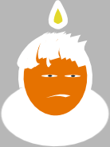

Gods scheppingsplan
Uitleg bij de poster
| Persona | Rol | Leer meer |
|---|---|---|
|
|
De heilige drie-eenheid, drievuldigheid of
triniteit (v. Lat.: trinitas) is de theologische opvatting in
veel takken van het christendom dat God bestaat in drie heilige
personen: de Vader, de Zoon (Jezus Christus) en de Heilige
Geest.
|
Wikipedia |
Het Oude Testament
| Persona | Rol | Leer meer |
|---|---|---|
|
|
Het scheppingsverhaal in Genesis vormt het
begin van de Hebreeuwse Bijbel en beschrijft de schepping van de
wereld door God. Buiten Genesis verwijzen onder andere ook de
Bijbelboeken de Psalmen (Psalm 104), het Evangelie volgens
Johannes (Johannes 1:1-5) en de Handelingen van de Apostelen
(Handelingen 17:24-26) naar dit scheppingsverhaal. Genesis
begint met de woorden "In het begin schiep God de hemel en de
aarde", wat als een inleidende samenvatting kan worden gezien of
als een beschrijving van gebeurtenissen die voorafgingen aan de
scheppingsweek. Hierop volgt een beschrijving van zes
scheppingsdagen. Elke scheppingsdaad begint met een
scheppingswoord van God, "God zei: ...". Op de 1ste, 2de, 4de en
5de dag vindt steeds één scheppingsdaad plaats, alleen op de 3de
en 6de dag vinden twee scheppingsdaden plaats op één dag.
|
Wikipedia |

|
Adam en Eva waren volgens de Bijbel de
eerste man en de eerste vrouw. Het Bijbelboek Genesis vertelt
dat God Adam schiep door leven te blazen in het "stof der aarde"
(Gen. 2:7). Later creëerde Hij Eva uit een bot van Adam. God had
met de mens het volgende doel: "Hij zegende hen en zei tegen
hen: ‘Wees vruchtbaar en word talrijk, bevolk de aarde en breng
haar onder je gezag: heers over de vissen van de zee, over de
vogels van de hemel en over alle dieren die op de aarde
rondkruipen."
|
Wikipedia |
|
|
De erfzonde is, volgens de christelijke
leer, de zondigheid die ieder mens door zijn geboorte aankleeft
als gevolg van de zondeval van het eerste mensenpaar. Vrijwel
alle christelijke kerken onderschrijven dit leerstuk. Volgens de
christelijke leer is de erfzonde het gevolg van de zondeval. In
het bijbelverhaal van de zondeval waren Adam en Eva de eerste
paradijsbewoners, aan wie het door God verboden was te eten van
de Boom van de kennis van goed en kwaad. Op aanraden van een
slang - die traditioneel door de christenen in navolging van de
rabbijnen gelijk wordt gesteld aan Satan - aten zij toch van die
boom. Hierdoor verwierven ze kennis van goed en kwaad en werden
zij onderworpen aan zonde en dood. Door deze eerste zonde werd
de gehele mensheid sterfelijk en behept met een zondige natuur.
Deze zondige en sterfelijke aard wordt, volgens het christendom,
door ieder mens in de lijn van de geslachten 'geërfd' van de
eerste voorouders. De leer van de erfzonde is een centrale
leerstelling in de christelijke dogmatiek. Het is een hoeksteen
van de verzoeningsleer. De erfzonde veroorzaakt een verwijdering
tussen mens en God en maakt een verzoening noodzakelijk. De
erfzonde veroorzaakt tevens sterfelijkheid en lijden van de mens
waardoor de zondige mens verlossing nodig heeft. Deze verlossing
van de mens, tevens verzoening tussen mens en God, is gekomen,
volgens het christendom, met de kruisdood en opstanding van de
in Jezus Christus vleesgeworden God. In de rooms-katholieke leer
wast het doopsel de erfzonde af, maar er blijven sporen in de
mens achter waardoor de geneigdheid tot zonde blijft bestaan, de
zgn. 'begeerlijkheid'.
|
Wikipedia |
|
|
In de Bijbel wordt verteld hoe God aan
Noach de opdracht gaf een ark te bouwen. Want er zou een grote
vloed komen die alle leven zou vernietigen, omdat er groot
onrecht en ongeloof onder de mensen was ontstaan en God er
berouw van had gekregen dat Hij de mens had gemaakt. Van elke
reine diersoort moest Noach zeven mannetjes en vrouwtjes - en
van elke onreine diersoort één mannetje en één vrouwtje meenemen
aan boord van de ark. Toen de bouw van de ark was voltooid,
gingen Noach, zijn vrouw, zijn zonen en hun vrouwen, aan boord
en sloot God de deur van de ark (Genesis 7:16). Daarna begon het
veertig dagen en veertig nachten zeer hevig te regenen en
ontstond er een grote vloed die alles vernietigde. Alles wat
leefde kwam om, behalve Noach en zijn familie, en de dieren die
bij hen in de ark waren. Honderdvijftig dagen lang werd de aarde
door water bedekt. Toen begon het water te zakken en kwam de ark
op de berg Ararat vast te zitten. Langzaam aan werden ook de
toppen van andere bergen zichtbaar. Na veertig dagen zond Noach
er een raaf op uit om de omgeving te verkennen, maar deze bleef
rondvliegen tot de aarde droog was. Vervolgens liet hij een duif
los. De duif keerde echter terug omdat ze geen plek kon vinden
om neer te strijken. Na zeven dagen liet Noach de duif opnieuw
los. Tegen de avond kwam deze weer terug, maar dit keer met een
jong olijfblad in de snavel. Zo wist Noach dat het water al
behoorlijk gedaald moest zijn. Nog eens zeven dagen later liet
hij de duif voor een derde maal los en ditmaal keerde deze niet
terug. Na het verlaten van de ark bracht Noach een offer aan
God. God beloofde Noach dat Hij de aarde en al wat er op leefde
niet meer door water zou vernietigen, en sloot een verbond met
hem. Als teken van Gods verbond met Noach zou voortaan de
regenboog verschijnen. Als deze aan de hemel verscheen zou God
zich het verbond herinneren dat Hij met Noach had gesloten.
|
Wikipedia |
|
|
Volgens het verhaal over de zondvloed in
het boek Genesis, is Noach de stamvader van alle huidige mensen,
omdat hij met zijn vrouw, zijn zonen Sem, Cham en Jafet en hun
vrouwen, als enige de vloed overleefde.
|
Wikipedia |
|
|
Sodom en Gomorra waren twee steden waarvan
de verwoesting door God in de Hebreeuwse Bijbel wordt vermeld in
het boek Genesis vers 18-19. In het boek Genesis wordt
beschreven hoe beide steden door God werden verwoest in een
regen van zwavel en vuur vanwege de morele verdorvenheid van de
inwoners. Aartsvader Abraham pleitte bij God vergeefs voor het
behoud van de steden. Hij suggereerde dat er misschien een paar
rechtvaardigen in de steden waren. De enige rechtvaardigen waren
echter Abrahams neef Lot met zijn gezin. Twee engelen bezochten
Sodom en Lot nam de engelen als gasten in huis.
|
Wikipedia |
|
|
Abram (zoals hij aanvankelijk heette) was
getrouwd met Sarai. Zij hadden geen kinderen gekregen omdat zij
onvruchtbaar was. Abram had van God te horen gekregen dat hij
zijn geboorteland moest verlaten: "Ga naar het land dat ik je
wijzen zal". Abram vertrok nu met zijn familie en dienstknechten
naar Haran. Daar kreeg hij een tweede oproep van God, waarna hij
met zijn huishouden en knechten (circa 1000 personen) een
nomadenbestaan heeft geleid. Omdat Sarai Abram geen kinderen kon
geven, gaf zij hem een van haar concubines of bijvrouwen, Hagar
genaamd. Deze schonk hem een zoon, Jishma'el. Een tweede
bijvrouw van Abraham was Ketura. Zij schonk hem zes zonen:
Zimran, Joksjan, Medan, Midjan, Jishbak en Soeach. Later
verscheen God voor Abram en zei: "Ik zal met jou een verbond
aangaan en je zeer veel nakomelingen geven. En je zult de
stamvader worden van vele volkeren. Daarom heet je niet langer
Abram, maar Abraham. En je vrouw heet niet langer Sarai, maar
Sara. En ik zal haar vruchtbaar maken." Sara schonk Abraham nu
een zoon, Jitschak. Als test van zijn geloof moest Abraham
echter deze zoon aan God offeren. Toen hij op het punt stond om
dit inderdaad te doen, weerhield God hem ervan en stond er een
ram gereed om de plaats van het mensenoffer in te nemen.
|
Wikipedia |
|
|
Mozes werd geboren onder moeilijke
omstandigheden. Zijn volk leefde onder Egyptische onderdrukking
en er was zelfs een geboortepolitiek ingevoerd die erop neer
kwam dat alleen meisjes mochten blijven leven. Daarom werd Mozes
door zijn moeder als baby te vondeling gelegd tussen het riet
van (een zijarm van) de Nijl. Hij werd gevonden door een dochter
van de farao die daar net een bad ging nemen en de baby prompt
adopteerde. Zij herkende het kind als van Hebreeuwse afkomst.
Doordat zijn zuster Mirjam in de nabijheid was gebleven om een
oogje in het zeil te houden, kon en durfde zij aan de dochter te
vragen of zij een voedster voor hem bij de Hebreeuwse vrouwen
zou gaan zoeken. De dochter ging hiermee akkoord en zou daarvoor
betalen. Zo kwam het kind via een omweg toch weer bij zijn
moeder terug. Toen hij groot genoeg was werd hij aan de dochter
van de farao teruggegeven. Zij was het die hem de naam Mozes
('hij die optilt, uittrekt') gaf, 'want,' zei ze, 'ik heb hem
uit het water getrokken.'(Exodus 2:10)
|
Wikipedia |
Het Nieuwe Testament
| Persona | Rol | Leer meer |
|---|---|---|
|
|
Maria is in het Nieuwe Testament de moeder
van Jezus. De oorsprong van de naam is hoogst waarschijnlijk
Egyptisch: Meriam, van Meri-Amon (wat betekent "de Geliefde van
-de God- Amon"). Volgens de christelijke traditie is zij de
dochter van Joachim en Anna.Voor katholieken is zij de
belangrijkste heilige. In de Rooms-katholieke Kerk en
Oosters-orthodoxe Kerk heeft Maria als Moeder van God een
belangrijke rol in het geloofsleven. In de Orthodoxe Kerk is de
gangbare uitdrukking voor Maria Moeder Gods en niet Maria. Er is
binnen de theologie zelfs een complete discipline die zich
speciaal op haar richt: de mariologie. Verschillende liturgische
feesten en hoogfeesten worden ter ere van haar gevierd. Het
Nieuwe Testament vermeldt dat Maria nog niet samenwoonde met
Jozef maar wel verloofd was, toen ze zwanger werd en dat ze nog
geen geslachtsgemeenschap hadden gehad. Maria was dus nog een
maagd. Volgens aankondiging van de engel Gabriël (de
annunciatie) werd Jezus in de schoot van Maria ontvangen door de
kracht van de Heilige Geest.
|
Wikipedia |
|
|
Volgens de Bijbel werd Jezus geboren opdat
hij de mensen zou en zal redden van hun zonden. De evangeliën
naar Lucas en Matteüs geven aan dat Jezus in de plaats
Bethlehem, gelegen in de streek van Judea, werd geboren uit een
maagdelijk meisje genaamd Maria, en dat hij in haar was verwekt
door de Heilige Geest van God. Maria was verloofd met de
timmerman Jozef, met wie ze toen nog niet was getrouwd. Toen hij
hoorde dat ze zwanger was, wilde hij in het geheim de verloving
verbreken, om haar niet in opspraak te brengen. Maar 's nachts
kreeg hij een droom waarin hem verteld werd wat er gebeurd was
en met welk doel, en dat hij Maria bij zich in huis moest nemen.
Jozef gehoorzaamde.
|
Wikipedia |
|
|
Volgens de christelijke leer is Jezus de
eniggeboren Zoon van God en de door God, in het Oude Testament
(Tenach) bij monde van de profeten, beloofde messias, (o.a.
Jesaja 53:3 en verder), de gezalfde van God, die de mensen
verlost van hun zonden en de harmonie tussen God en mensen
herstelt die verbroken was als gevolg van de zondeval van de
eerste mensen in het paradijs. Hij beloofde de mensen die
geloven dat hij het plaatsvervangend zoenoffer voor God is en
daarmee de straf op zich nemend voor de zonden van de mensheid,
te 'behouden' en hen 'eeuwig leven' te geven. Volgens de uitleg
die diverse bijbelschrijvers gaven, maakte zijn dood aldus de
verzoening met God de Vader mogelijk, doordat hij de straf op
zich nam voor de zonden van de mensheid; Jezus is "het Lam van
God dat de zonden van de wereld wegneemt." De opvatting dat
Jezus met zijn kruisdood de mens verzoent met God, heet de
verzoeningsleer. Daardoor trad het abrahamitische principe van
de 'rechtvaardiging door geloof' op een nieuwe manier in
werking: ieder die in Jezus gelooft, zal voor God de Vader
gerechtvaardigd (gerehabiliteerd) zijn. Zijn in het Nieuwe
Testament beschreven geboorte (Kerstmis), zijn dood aan het
kruis (Goede Vrijdag), de opwekking uit de dood (Pasen), de
Hemelvaart (Hemelvaartsdag), het neerdalen van de Heilige Geest
op zijn discipelen (Pinksteren) en de terugkeer (de Wederkomst),
staan centraal in de theologie van het traditionele christendom.
De opwekking uit de dood wordt door de meeste gelovigen binnen
het traditionele christendom letterlijk genomen. De gebeurtenis
neemt daar een cruciale plaats in, omdat het voor hen de
uiteindelijke overwinning over de dood als 'laatste vijand' tot
uitdrukking brengt. Ook Paulus noemt in zijn eerste brief aan de
christenen van Korinthie de letterlijk genomen opstanding van
Jezus het centrale punt in het evangelie.
|
Wikipedia |
De Sacramenten
| Persona | Rol | Leer meer |
|---|---|---|
|
|
De rooms-katholieke theologie onderscheidt
dus drie soorten waarop de mens aan de doopgenade deelachtig kan
worden: (1) Door de waterdoop, die voor eenieder die haar kan
ontvangen absoluut verplicht en heilsnoodzakelijk is. Aan de
hemel zullen door de waterdoop ook deelachtig worden: onwetende
kinderen die in ketterse niet-katholieke genootschappen geldig
gedoopt zijn, onwetend of te goeder trouw dwalende
niet-katholieken die niet in staat van doodzonde verkeren.
Degenen die bewust de rooms-katholieke leer bestrijden of
verwerpen met hardnekkige innerlijke tegenstand en wel geldig
gedoopt zijn, zijn - volgens de katholieke leer - daarentegen
wél van het heil uitgesloten. (2) Door het Doopsel van begeerte
dat tot stand komt door een volmaakte liefde en het door
bovennatuurlijk geloof in Jezus Christus en diens
rooms-katholieke Kerk. Zo worden bijvoorbeeld catechumenen die
voor hun doopsel onverwacht sterven geacht worden deze vorm het
doopsel ontvangen te hebben. Door sommigen wordt deze vorm van
doopgenade ook toegepast op de bijzondere gevallen van hen die
zonder eigen schuld in absolute onwetendheid over het
christendom leven én daarbij één Schepper en de natuurwet
volgen. Deze laatste situatie lijkt echter uiterst zelden voor
te komen, zeggen bepaalde theologen. (3) Door het Doopsel van
bloed van hen die hun bloed als martelaren gaven voor het
getuigenis van Christus en nog niet gedoopt waren. Vereist is
hiervoor wel, dat deze niet bewust in tegenstand tegen de
Katholieke Kerk leefden.
|
Wikipedia |
|
|
Samen met het doopsel en de eucharistie
vormt het sacrament van het vormsel het geheel van de drie
initiatiesacramenten van de Katholieke Kerk. Het vormsel
vervolmaakt de doopgenade en geeft de Heilige Geest. Hierdoor
kan de vormeling dieper wortelen in het goddelijk kindschap en
wordt hij of zij vaster ingelijfd bij Christus. Het verstevigt
de band met de Kerk en haar zending. Het helpt de vormeling door
woord en daad getuigenis af te leggen van het christelijk
geloof. Bovenal geeft het vormsel de genade om in tijden van
vervolging en verdrukking het geloof trouw te blijven en als een
dappere soldaat voor Christus' overgeleverde leer in blijven te
staan, ook indien de dood zou volgen. In de Middeleeuwen werd
het vormsel dan ook als een belangrijke stap gezien naar het
bereiken van miles Christi-ideaal. De wezenlijke ritus van het
vormsel is de zalving met het heilig chrisma van het voorhoofd
van de gedoopte (in het Oosten ook van de zintuigen en andere
plaatsen), samen met de handoplegging door de bedienaar en de
woorden : Accipe signaculum doni Spiritus Sancti Ontvang het
zegel van de heilige Geest, de gave Gods (vernieuwde Romeinse
ritus).
|
Wikipedia |
|
|
Volgens de Katholieke Kerk werd de
Eucharistie door Jezus ingesteld aan de vooravond van zijn
kruisiging tijdens het Laatste Avondmaal. Het Evangelie verhaalt
hoe Jezus ongezuurd brood nam, dank zegde, het brak en een
opdracht deed waaronder Hij zei: "Dit is mijn Lichaam." Hij
deelde het uit aan zijn apostelen, nam een kelk met wijn, zegde
dank en zei: "Dit is mijn Bloed." Ook dit deelde Hij uit aan
zijn leerlingen, met de opdracht deze handelingen telkens te
herhalen om Hem te gedenken. Na de verrijzenis van Jezus
herhaalden de mensen die zijn leer aanvaardden iedere zondag -
zeer vroeg in de morgen - dit ritueel. Niet alleen belangrijk is
dat de tekenen van brood en wijn, lichaam en bloed van Christus
worden: ook de deelnemers worden veranderd. Door de eucharistie
worden de deelnemende gelovigen verenigd met de Heer en worden
zó tot Volk Gods. Het gaat dus om vereniging met de Heer, om
later, in het gewone leven de Heer uit te dragen. Men ontvangt
dus het Lichaam van Christus (de hostie) om Zijn lichaam (Kerk)
te worden.
|
Wikipedia |
|
|
De biecht, ook wel boetesacrament,
sacrament van de vergeving of sacrament van boete en verzoening
genoemd, is een van de zeven sacramenten van de Katholieke Kerk.
In dit sacrament kan de priester in Christus' naam zonden
vergeven. Deze priesterlijke functie wordt biechtvader genoemd.
De biecht is gebaseerd op de woorden van de apostel Johannes:
"Belijden we onze zonden, dan zal hij, die trouw en rechtvaardig
is, ons onze zonden vergeven en ons reinigen van alle kwaad." Na
de begroeting van de boeteling, belijdt deze zijn zonden en legt
de priester de penitentie op en verstrekt goede raad, zodat de
penitent de fouten in de toekomst kan vermijden. Vervolgens
verleent de priester de boeteling "vrijspraak en vrede" door de
sacramentele absolutie, de vorm waardoor de genade van
vergiffenis geschonken wordt. Er zijn drie voorwaarden voor de
absolutie: de essentie van het gehele verhaal moet verteld
worden, dat wil zeggen alle begane doodzonden en bij voorkeur
ook de kern van de dagelijkse zonden, de boeteling moet berouw
vertonen en moet het voornemen hebben zijn leven te veranderen.
Tenslotte volgen de lofprijzing, dankzegging en de wegzending
met de zegen van de priester. Alhoewel de priester overal biecht
kan horen, gebeurt dit volgens de kerkorde meestal in een
biechtstoel in de Latijnse Kerk, terwijl de Byzantijnse en
andere riten de voorkeur geven aan een open ruimte, veelal nabij
de iconostase.
|
Wikipedia |
|
|
Binnen de Katholieke Kerk is het huwelijk
een van de zeven sacramenten. De bedienaren van dit sacrament
zijn de bruid en de bruidegom. Het kerkelijk recht schrijft voor
dat namens de kerk de priester van de lokale parochiekerk als
getuige optreedt. Dit kan ook verricht worden door een andere
priester of diaken, mits deze hiervoor zijn gemachtigd door de
priester van de eigen parochiekerk (dit wordt "dispensatie"
genoemd). In de meeste gevallen vindt de kerkelijke
huwelijksviering plaats binnen een Eucharistieviering, maar dit
is niet verplicht: het huwelijk met een eucharistie is enkel op
zijn plaats als het bruidspaar ook in het gewone leven de
eucharistie waardeert als de bron van hun christelijk leven. In
de Katholieke huwelijksmis wordt in de lezingen nogmaals
gesproken over het grote sacrament dat het huwelijk is, over de
genade die God geeft voor de liefdevolle instandhouding ervan,
over de noodzaak van het krijgen van kinderen voor het menselijk
geslacht en over het onverbrekelijk karakter van het Christelijk
huwelijk.
|
Wikipedia |
|
|
De wijding is, net zoals het doopsel en
vormsel, eenmalig. Een wijding is onuitwisbaar. Het is een
kerkelijke bezegeling van een roeping. Wijding is, zoals ook
alle andere sacramenten, tegelijkertijd gave en opgave. Door de
wijding zijn de wijdelingen gelijkvormig geworden met het beeld
van Christus, de hoogste en eeuwige priester.
|
Wikipedia |
|

|
De ziekenzalving of het heilig oliesel is
een van de zeven sacramenten van de Katholieke Kerk alsmede van
de orthodoxe Kerken. Ziekenzalving wordt in toenemende mate ook
in protestantse kerken toegepast. De rest van dit artikel neemt
de katholieke ziekenzalving als uitgangspunt. Het wordt door de
priester toegediend aan zieken die in doodsgevaar verkeren; zij
worden op het voorhoofd en op de handen (in oude ritus op
voorhoofd, neus, oren, ogen, mond, handen en soms voeten)
gezalfd met speciaal hiervoor gezegende pure olijfolie (materie:
oleum infirmorum, zijnde ziekenolie), waarbij tegenwoordig
slechts eenmaal deze woorden worden uitgesproken: Per istam
sanctam unctionem et suam piissimam misericordiam adiuvet te
Dominus gratia Spiritus Sancti, ut a peccatis liberatum te
salvet atque propitius allevet. "Moge onze Heer Jezus Christus
door deze heilige zalving en door Zijn liefdevolle
barmhartigheid u bijstaan met de genade van Zijn Heilige Geest.
Moge Hij u van zonden bevrijden, u heil brengen en verlichting
geven". De oude ritus bestaat in het herhalen van een hieraan
gelijk gebed bij de zalving van de verschillende ledematen en
zintuigen (vorm). Soms wordt gesproken van laatste sacramenten.
Hiermee worden naast de ziekenzalving ook de (laatste) biecht en
de (laatste) communie (het viaticum) bedoeld. Andere benamingen
voor deze combinatie van biecht, sacrament van de zieken en
communie sacramenten der stervenden en sacramenten der zieken.
In delen van Nederland, met name in Limburg, Twente en de
Achterhoek, gebruikt men hiervoor het woord bediening in de vorm
van het bediend worden van de ernstig zieke gelovige door de
priester.
|
Wikipedia |
Hemel, hel en vagevuur
| Persona | Rol | Leer meer |
|---|---|---|
|
|
Hoe de hemel er precies uitziet en hoe het
daar is, daar zijn in de loop der eeuwen allerlei voorstellingen
van gemaakt. Een bekende, romantische voorstelling is die van
mensen die daar ‘met gouden lepeltjes zouden eten’. Maar de
Bijbel zegt er eigenlijk niet zo veel over. Een beeld in het
laatste Bijbelboek Openbaring is dat van een eeuwige stad van
vrede, het nieuwe Jeruzalem, waar God en mensen samenwonen. De
hemel als een stad waarin alles enkel en alleen goed is, zonder
verdriet, dood en pijn. Jezus spreekt over het huis van zijn
Vader waar veel kamers zijn (Joh. 14,2). Waar plaats voor velen
is. We zullen God zien zoals Hij is, van aangezicht tot
aangezicht (I Kor. 13,12).
|
Vensters op Katholiek Geloven |
|
|
Rooms-katholieken geloven dat de meeste
zielen voor hun intrede in de hemel eerst nog tijdelijk
gelouterd moeten worden in het vagevuur. Alle christenen die het
Credo (de geloofsbelijdenis) belijden geloven dat de hel een
plaats is waar de zielen van de verdoemden heen gaan. Deze
zielen ondergaan geen loutering in het vagevuur om daarna het
eeuwig leven te kunnen binnengaan, maar zijn voor eeuwig
verloren. 'De hel zit vol zielen die geen geloof hebben gehecht
aan de het bestaan van de hel'. Voor Rooms-katholieke en andere
christenen is de hel een werkelijkheid die zich in het hier en
nu kan manifesteren door de invloed van duivelse geesten en de
satan. Zij is een werkelijkheid die bestaat naast de
werkelijkheid van het leven van de mensen in de wereld en het
leven van de zielen in de hemel en het vagevuur. De
rooms-katholieken geloven dat zij met hun gebed en geestelijke
offers de zielen in het vagevuur vertroosting kunnen geven en
een spoediger verlossing uit het vagevuur, terwijl de zielen in
de hel niet meer gebaat zijn bij gebed of goede werken ter hunne
verlossing gedaan, maar werkelijk reddeloos verloren zijn.
Binnen de Rooms Katholieke Kerk zijn middels vele
privé-openbaringen heilsmiddelen gegeven aan de mensen om zich
voor een eeuwige verdoemenis te bewaren. Zo is er het gebed van
de drie weesgegroeten per dag in combinatie met het dragen van
het scapulier. Of het rozenkransje van Barmhartigheid
geopenbaard door de heilig verklaarde zuster Faustina Kowalska
(Polen) waaraan de belofte verbonden is dat wanneer iemand dat
gebed slechts één maal in zijn leven heeft gebeden, hij niet
verloren zal gaan. Wat overigens niets zegt over de duur van het
verblijf in het vagevuur. In de Bijbel is op meerdere plaatsen
sprake van het bestaan van de hel, voornamelijk in het Nieuwe
Testament.
|
Wikipedia |
|
|
Vagevuur, ook wel purgatorium of
louteringsberg, zijn in de katholieke leer namen voor een plek
of staat na de dood voor zielen die naar de hemel gaan, waar men
wordt gelouterd of gestraft, voor nog niet uitgeboete zonden die
wel al vergeven zijn (in het geval van zware zonden in de biecht
of door een volmaakt berouw). Anders gezegd: iedere zware zonde,
hoe groot ook, kan worden vergeven door een volmaakt berouw (als
biechten niet mogelijk is) of middels een berouwvolle biecht,
maar de schuld die aan de zonde aankleeft moet nog worden
goedgemaakt, uitgeboet. Men kan dit bij zijn leven doen door
zijn lijden, ziekte etc. geduldig te dragen, werken van
barmhartigheid te doen, gebed, het bijwonen van de heilige Mis,
maar is men te kort geschoten dan boet men de rest van de schuld
in het vagevuur uit. De doodzonde leidt tot de eeuwige
verdoemenis (de hel), en moet tijdens het leven berouwd worden.
De dagelijkse zonden worden al vergeven wanneer men met aandacht
de heilige Mis bijwoont. Het zijn zonden die niet tot de dood
leiden. Het vagevuur is een plaats die zowel de gerechtigheid
van God als zijn barmhartigheid recht doet. God, in zijn
volmaakte rechtvaardigheid, verdraagt geen onzuiverheid en
onrecht, maar zijn oneindige barmhartigheid wil dat niemand
verloren gaat. De ziel ondergaat daarom zijn gerechte straf,
maar is wel gered. Hij gaat niet verloren in de hel. De zielen
in het vagevuur worden vaak arme zielen genoemd vanwege het
lijden dat zij ondergaan. De ziel zelf echter weet dat hij gered
is en dat hij na een periode van rechtvaardige straf die hij
door zijn daden of het nalaten van goede daden (!) zelf op zich
heeft geladen, met God verenigd zal worden in de hemel. Dit is
zijn grootste vreugde en troost in zijn lijden. Nadat de ziel is
gelouterd krijgt hij toegang tot de hemel, alwaar hij tot de dag
van de wederkomst van Christus voort mag leven voor Gods'
Aangezicht, hierbij God lovend, met alle engelen en heiligen. Na
de wederkomst van Christus worden allen opgewekt om het laatste
oordeel te ondergaan.
|
Wikipedia |